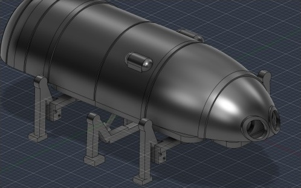
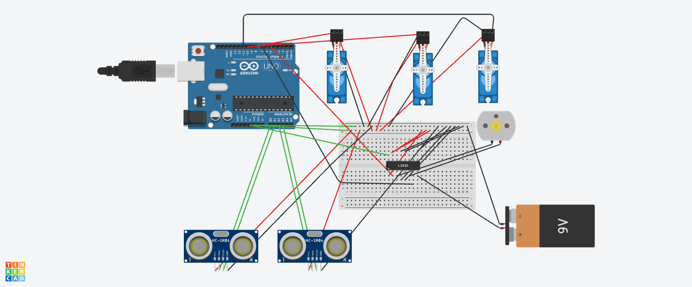

Side linkages
Each side uses a parallelogram four-bar to move its front and rear legs together.
Student engineering project
An insect-inspired adaptive walker that explores alternating tripod gait, ultrasonic obstacle sensing, and a spring-loaded jump mechanism.
View project documents ↓
The P1 uses paired walking linkages and a central rocker to shift support between two sets of three feet. The Rev F manual documents a separate jumping mechanism for obstacle traversal.
Each side uses a parallelogram four-bar to move its front and rear legs together.
The middle legs share a rocker that shifts which feet carry the robot during each half of the gait.
A servo loads a hinged tail against elastic bands. A latch holds the load until the tail is released.
Open design item · The Rev F manual flags rocker-servo torque for validation and lists a lever drive and a stronger servo as options.
The simulated setup uses an Arduino Uno R3, two HC-SR04 ultrasonic sensors, three servos, and an L293D driver for a DC motor. The Rev F physical assembly instead specifies four servos and a different pin map.

The assembly manual and joint sheet cover different P1 mechanisms. The manual describes the Rev F furca assembly, and the Inventor sheet includes a geared plunger model.
Six sheets covering the general arrangement, chassis, walking linkage, furca, wiring, and parts list.
Open assembly manual (PDF) ↗Three pages with assembled CAD views, the joint schedule, linkage geometry, and simulation notes.
Open Inventor joint sheet (PDF) ↗Mohamed Ibrahim Awad · Abdullah Alzubaidi · Abdallah Arafat · Marjan Shadmani Fard
Read the team’s original design references ↗